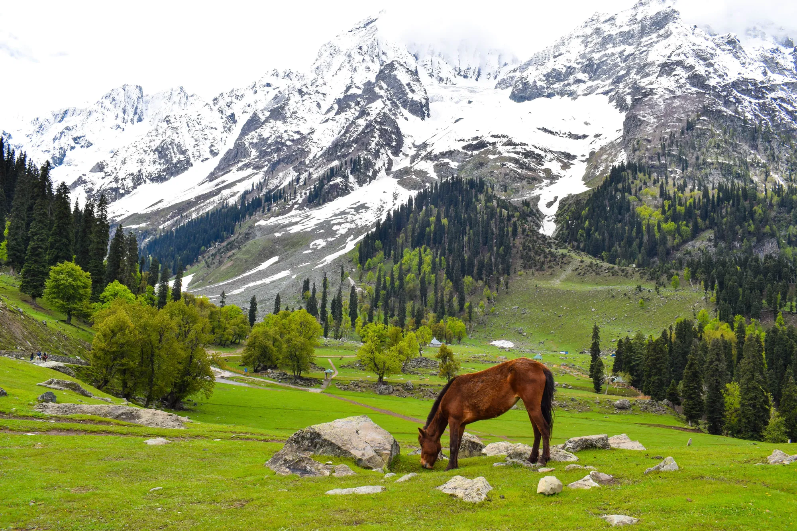

Location and Features:
Kashmir is a region in the northern part of the Indian subcontinent, known for its stunning natural beauty and diverse culture. It's a mountainous area, encompassing the Vale of Kashmir, Jammu, and Ladakh. The region has been a point of contention between India, Pakistan, and China for decades. Kashmir is renowned for its scenic landscapes, including lakes, rivers, and mountains, and its rich cultural heritage, including handicrafts like Pashmina shawls and carpets.
